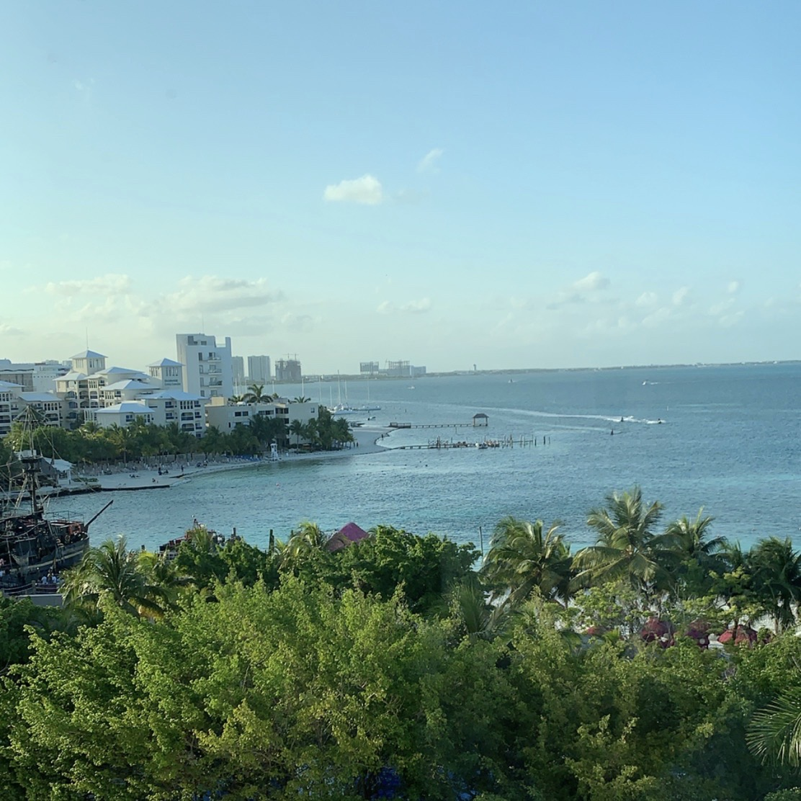

March 2019
In January of 2019, my best friends and I planned another trip, but this time to Cancún, Mexico. We decided to go during Spring Break. We went at the end of March for around a week. It was the first time I have ever been out of the country.
We planned everything very quickly and spontaneously at the end of January. We booked flights and an all inclusive resort on the beaches of Cancún. Three of us were coming from Chicago and our other friend came all the way from Delaware. We all met in the airport in Cancún and began our first trip out of the country together!
The trip included a lot of beach time and pool time. In fact, on the first day we were there, we didn't get burned by the sun at all and made the mistake to not wear any sunscreen on the second day which resulted in terrible sunburn that lasted the entire trip. We learned from it though and made sure to wear sunscreen the rest of the trip.
We didn't travel off the resort, only once to go to Walmart, but that was it. Other than that, everything we needed was right where we were sleeping. We enjoyed trying new foods at the many restaurants that were scattered about and meeting people from all over the world!